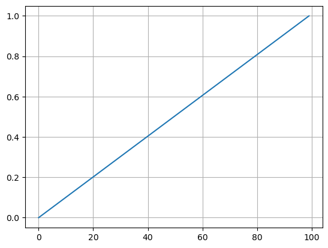
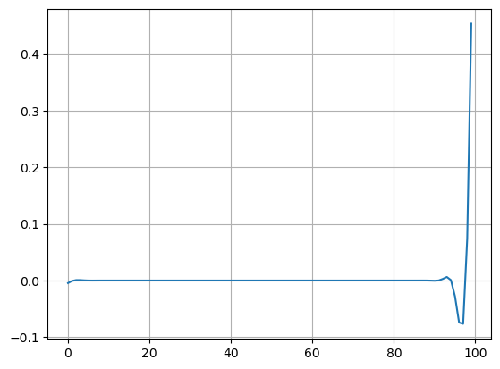
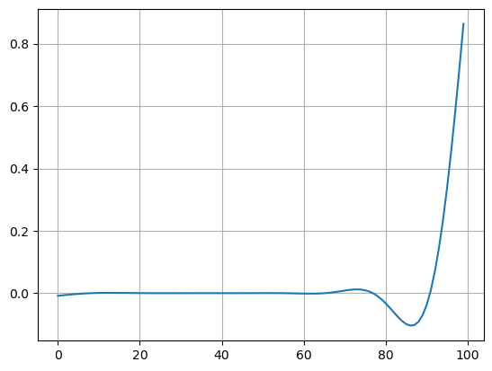

import numpy as np
import matplotlib.pyplot as plt
# Scegliamo alcuni parametri
n = 100 # dimensione del problema
sigma = 0 # 0.01 # std del rumore gaussiano
x_true = np.linspace(0, 1, n) # soluzione esatta
# STEP 1: Costruire un problema test della forma
# Ax = y, con soluzione esatta x_true, e matrice
# A della forma:
#
# A = |-2 1 0|
# |1 -2 1|
# |0 1 -2|
#
# e aggiungere a y rumore gaussiano con deviazione standard sigma
A = np.zeros((n, n))
for i in range(n):
A[i, i] = -2 # diagonale
if (i+1) < n:
A[i, i+1] = 1 # sovradiagonale
A[i+1, i] = 1 # sottodiagonale
y = A @ x_true # problema test
y = y + sigma * np.random.normal(0, 1, (n, ))
# STEP 2: Verificare che la matrice A non sia troppo mal condizionata
print(np.linalg.cond(A))
4133.642926800066
# STEP 3: Risolvere il sistema delle equazioni normali associato ad A tramite metodo di Cholesky.
L = np.linalg.cholesky(A.T @ A)
z = np.linalg.solve(L, A.T @ y)
x_chol = np.linalg.solve(L.T, z)
plt.plot(x_chol)
plt.grid()
plt.show()

# STEP 4: Risolvere il problema dei minimi quadrati utilizzando Discesa del Gradiente ad una tolleranza fissata di tolf = tolx = 1e-6, utilizzando SIA il metodo a passo fisso che con backtracking.
# Nel caso di passo fisso, scegliere alpha in modo adeguato.
def GD(f, df, x0, x_true, alpha, maxit=100, tolf=1e-6, tolx=1e-6):
r"""
Implementa il metodo di discesa del gradiente con passo fisso applicato ad una funzione f(x) della quale si conosce la derivata df(x).
Parameters:
f (function): la funzione obiettivo che si vuole minimizzare
df (function): la derivata (o gradiente) della funzione obiettivo
x0 (ndarray): valore iniziale dell'algoritmo
x_true (ndarray): la soluzione esatta dell'algoritmo (nota SOLO in fase di test)
alpha (float): il passo fisso che descrive gli step dell'algoritmo
maxit (int): numero di iterazioni
tolf (float): tolleranza di || grad(f) ||_2
tolx (float): tolleranza di || x_{k+1} - x_k ||_2
"""
# Inizializzazione
k = 0
rel_err = np.zeros((maxit+1, ))
obj_val = np.zeros((maxit+1, ))
grad_norm = np.zeros((maxit+1, ))
# Ciclo iterativo (uso un ciclo while)
condizione = True
while condizione:
# Aggiornamento x_{k+1} = x_k - alpha_k df(x_k)
x = x0 - alpha * df(x0)
# Calcolo dell'errore e salvataggio
rel_err[k] = np.linalg.norm(x - x_true) / np.linalg.norm(x_true)
obj_val[k] = f(x)
grad_norm[k] = np.linalg.norm(df(x))
# Check condizioni di arresto
condizione = (k < maxit) and (np.linalg.norm(df(x)) > tolf) and (np.linalg.norm(x - x0) > tolx)
# Se l'algoritmo termina per || x_{k+1} - x_k || < tolx, stampare il warning
if (np.linalg.norm(x - x0) < tolx):
print(f"Algoritmo terminato per condizione su tolx.")
# Preparazione per step successivo
k = k + 1
x0 = x
# Se l'algoritmo si ferma prima di maxit, tagliare i valori inutilizzati delle metriche
if k < maxit:
rel_err = rel_err[:k]
obj_val = obj_val[:k]
grad_norm = grad_norm[:k]
return x, rel_err, obj_val, grad_norm
def f(x):
return 1/2 * np.linalg.norm(A @ x - y)**2
def df(x):
return A.T @ (A @ x - y)
x_GD, _, _, _ = GD(f,
df,
x0=np.zeros_like(x_true),
x_true=x_true,
alpha=0.001,
maxit=1000,
tolf=1e-6,
tolx=1e-6)
plt.plot(x_GD)
plt.grid()
plt.show()

def backtracking(f, df, x, alpha=1, rho=0.5, c=1e-4):
"""
Algoritmo di backtracking per Discesa Gradiente.
Parameters:
f : Funzione obiettivo.
df : Gradiente della funzione obiettivo.
x : Iterato x_k.
alpha : Stima iniziale di alpha(default 1).
rho : Fattore di riduzione (default 0.5).
c : Costante delle condizioni di Armijo (default 1e-4).
Returns:
alpha : Learning rate calcolato con backtracking.
"""
while f(x - alpha * df(x)) > f(x) + c * alpha * np.linalg.norm(df(x))**2:
alpha *= rho
return alpha
def GD_backtracking(f, df, x0, x_true, maxit=100, tolf=1e-6, tolx=1e-6):
r"""
Implementa il metodo di discesa del gradiente con passo scelto con backtracking applicato ad una funzione f(x) della quale si conosce la derivata df(x).
Parameters:
f (function): la funzione obiettivo che si vuole minimizzare
df (function): la derivata (o gradiente) della funzione obiettivo
x0 (ndarray): valore iniziale dell'algoritmo
x_true (ndarray): la soluzione esatta dell'algoritmo (nota SOLO in fase di test)
maxit (int): numero di iterazioni
tolf (float): tolleranza di || grad(f) ||_2
tolx (float): tolleranza di || x_{k+1} - x_k ||_2
"""
# Inizializzazione
k = 0
rel_err = np.zeros((maxit+1, ))
obj_val = np.zeros((maxit+1, ))
grad_norm = np.zeros((maxit+1, ))
# Ciclo iterativo (uso un ciclo while)
condizione = True
while condizione:
# Scelta di alpha_k con backtracking
alpha = backtracking(f, df, x0, alpha=1)
# Aggiornamento x_{k+1} = x_k - alpha_k df(x_k)
x = x0 - alpha * df(x0)
# Calcolo dell'errore e salvataggio
rel_err[k] = np.linalg.norm(x - x_true) / np.linalg.norm(x_true)
obj_val[k] = f(x)
grad_norm[k] = np.linalg.norm(df(x))
# Check condizioni di arresto
condizione = (k < maxit) and (np.linalg.norm(df(x)) > tolf) and (np.linalg.norm(x - x0) > tolx)
# Se l'algoritmo termina per || x_{k+1} - x_k || < tolx, stampare il warning
if (np.linalg.norm(x - x0) < tolx):
print(f"Algoritmo terminato per condizione su tolx.")
# Preparazione per step successivo
k = k + 1
x0 = x
# Se l'algoritmo si ferma prima di maxit, tagliare i valori inutilizzati delle metriche
if k < maxit:
rel_err = rel_err[:k]
obj_val = obj_val[:k]
grad_norm = grad_norm[:k]
return x, rel_err, obj_val, grad_norm
x_GD_backtracking, _, obj_val, _ = GD_backtracking(f,
df,
x0=np.zeros_like(x_true),
x_true=x_true,
maxit=2000,
tolf=1e-6,
tolx=1e-6)
plt.plot(x_GD_backtracking)
plt.grid()
plt.show()
